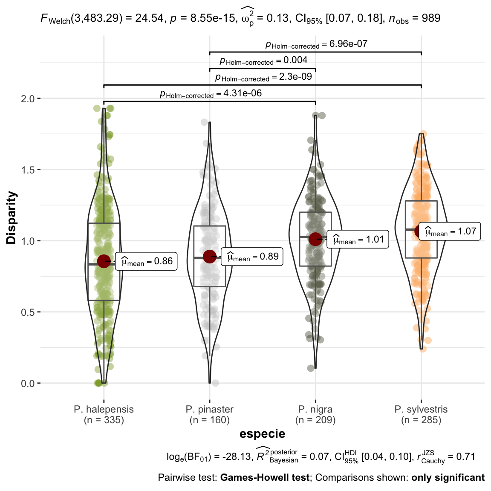
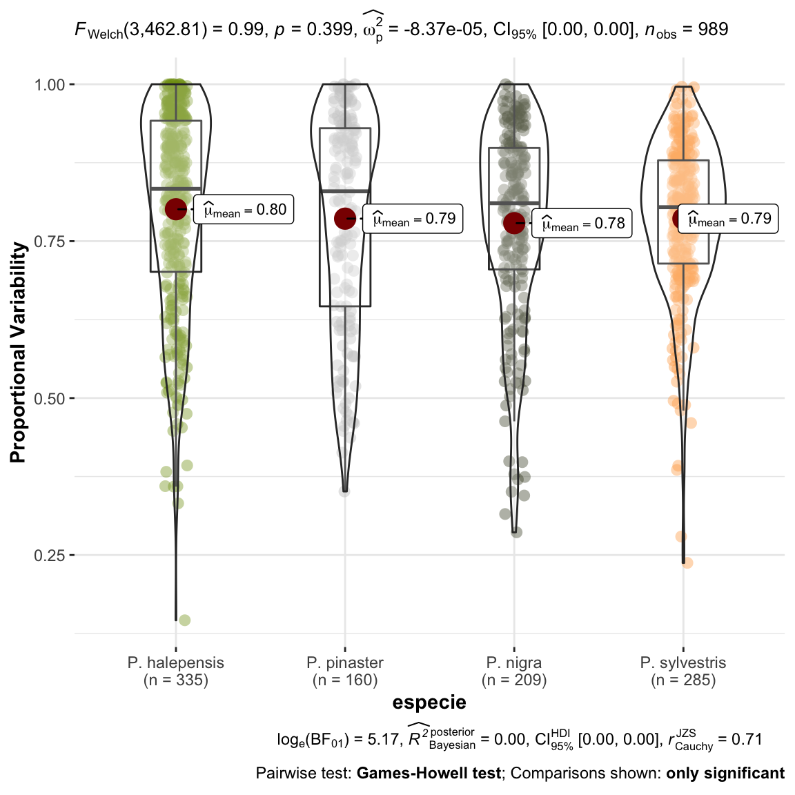
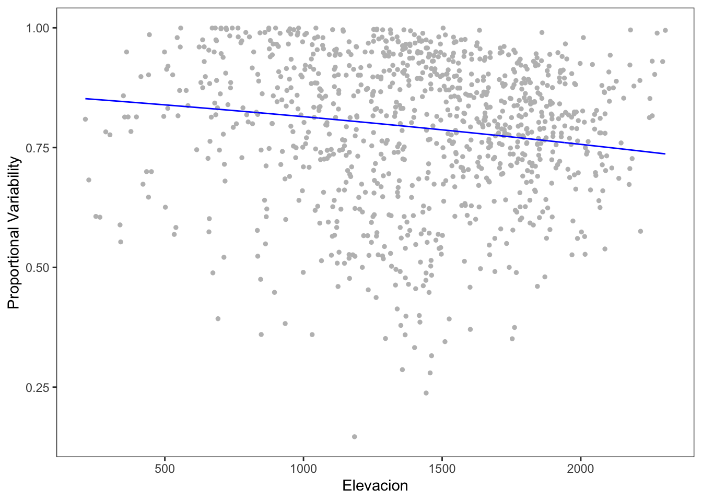

Last updated: 2021-05-18
Checks: 7 0
Knit directory: booksn_ppm/
This reproducible R Markdown analysis was created with workflowr (version 1.6.2). The Checks tab describes the reproducibility checks that were applied when the results were created. The Past versions tab lists the development history.
Great! Since the R Markdown file has been committed to the Git repository, you know the exact version of the code that produced these results.
Great job! The global environment was empty. Objects defined in the global environment can affect the analysis in your R Markdown file in unknown ways. For reproduciblity it’s best to always run the code in an empty environment.
The command set.seed(20210517) was run prior to running the code in the R Markdown file. Setting a seed ensures that any results that rely on randomness, e.g. subsampling or permutations, are reproducible.
Great job! Recording the operating system, R version, and package versions is critical for reproducibility.
Nice! There were no cached chunks for this analysis, so you can be confident that you successfully produced the results during this run.
Great job! Using relative paths to the files within your workflowr project makes it easier to run your code on other machines.
Great! You are using Git for version control. Tracking code development and connecting the code version to the results is critical for reproducibility.
The results in this page were generated with repository version 2e8acb8. See the Past versions tab to see a history of the changes made to the R Markdown and HTML files.
Note that you need to be careful to ensure that all relevant files for the analysis have been committed to Git prior to generating the results (you can use wflow_publish or wflow_git_commit). workflowr only checks the R Markdown file, but you know if there are other scripts or data files that it depends on. Below is the status of the Git repository when the results were generated:
Ignored files:
Ignored: .Rhistory
Ignored: .Rproj.user/
Ignored: data/.DS_Store
Ignored: data/data_raw/
Untracked files:
Untracked: analysis/dataNAO.Rmd
Unstaged changes:
Modified: analysis/references.bib
Modified: data/coplas2019.csv
Modified: data/coplas2019sn.csv
Note that any generated files, e.g. HTML, png, CSS, etc., are not included in this status report because it is ok for generated content to have uncommitted changes.
These are the previous versions of the repository in which changes were made to the R Markdown (analysis/computeDisparity.Rmd) and HTML (docs/computeDisparity.html) files. If you’ve configured a remote Git repository (see ?wflow_git_remote), click on the hyperlinks in the table below to view the files as they were in that past version.
| File | Version | Author | Date | Message |
|---|---|---|---|---|
| Rmd | 2e8acb8 | Antonio J Perez-Luque | 2021-05-18 | update index and add new analysis, diparity |
library("tidyverse")
library("here")
library("flextable")
library("ggpubr")
library("ggstatsplot")
library("DHARMa")
library("betareg")Vamos a utilizar unos índices que nos permiten estimar la variabilidad temporal de las series temporales. En concreto:
Mas información sobre estos índices: (Fernández‐Martínez et al. 2018; Fernández‐Martínez and Peñuelas 2021; Heath and Borowski 2013)
coplas2019 <- read_csv(here::here("data/coplas2019sn.csv"))
df <- coplas2019 %>%
filter(!is.na(especie)) %>%
dplyr::select(code, especie, `1993`:`2019`) %>%
pivot_longer(names_to = "year", values_to = "infestacion", `1993`:`2019`)
# disparity index
disparity <- function(x, k) {
# x es el vector con la serie temporal
# k es una cte que se añade para evitar problemas de
# indeterminación
x <- x[!is.na(x)] # remove NA
n <- length(x) # length time series
f <- NA
for (i in (1:(n-1))){
f[i] = abs(log((x[i+1] + k) / (x[i] + k)))}
D <- sum(f) / (n-1)
return(D)
}
# Proportional Variability See https://doi.org/10.1371/journal.pone.0084074
pvIndex <- function (x){
x <- x[!is.na(x)] # remove NA
n <- length(x) # length time series
pairs <- combn(x,2)
min.z <- apply(pairs, MARGIN = 2, min)
max.z <- apply(pairs, MARGIN = 2, max)
z <- 1-(min.z/max.z)
z[is.nan(z)] <- 1 # this solve problems of NaN
PV <- 2*sum(z) / (n*(n-1))
return(PV)
}parcelas <- unique(df$code)
df.disparity <- c()
for (i in 1:length(parcelas)) {
aux <- df %>% filter(code == parcelas[i])
D_parcela <- disparity(aux$infestacion, k=.1)
PV_parcela <- pvIndex(aux$infestacion)
out <- data.frame(code = parcelas[i],
D = D_parcela,
PV = PV_parcela)
df.disparity <- rbind(df.disparity, out)
}
dispar <- coplas2019 %>%
dplyr::select(
code, elev_mean, especie, sp_abrev) %>%
inner_join(df.disparity) plot_comparaD <- ggstatsplot::ggbetweenstats(
data = dispar,
x = especie,
y = D,
ylab = "Disparity") +
ggplot2::scale_color_manual(values = colores_pinos)
null device
1 Tal como observamos en el gráfico anterior, vemos que existe una mayor disparidad en las parcelas de P. sylvestris que en el resto. Esto, parece indicar, que en esta parcelas es donde estamos observando mayores diferencias entre años (“dientes de sierra más grandes”). Las parcelas de P. halepensis son las que menos disparidad presentan. En las parcelas de
plot_comparaPV <- ggstatsplot::ggbetweenstats(
data = dispar,
x = especie,
y = PV,
ylab = "Proportional Variability") +
ggplot2::scale_color_manual(values = colores_pinos)
null device
1 No observamos diferencias entre las especies para el indice PV, esto es, a lo largo de la serie temporal la variabilidad no es diferente entre especies.
# Corrección para que no llegue al 1 ni al 0. See
# https://stackoverflow.com/questions/26385617/proportion-modeling-betareg-errors/36420932
n.obs <- sum(!is.na(dispar$PV))
dispar$PVm <- ((dispar$PV * (n.obs -1)) + 0.5)/n.obs
model.pv <- betareg(PVm ~ elev_mean, data=dispar)
summary(model.pv)
Call:
betareg(formula = PVm ~ elev_mean, data = dispar)
Standardized weighted residuals 2:
Min 1Q Median 3Q Max
-2.7974 -0.6566 -0.1471 0.4957 4.8832
Coefficients (mean model with logit link):
Estimate Std. Error z value Pr(>|z|)
(Intercept) 1.825e+00 9.862e-02 18.501 < 2e-16 ***
elev_mean -3.449e-04 6.527e-05 -5.285 1.26e-07 ***
Phi coefficients (precision model with identity link):
Estimate Std. Error z value Pr(>|z|)
(phi) 5.7438 0.2524 22.76 <2e-16 ***
---
Signif. codes: 0 '***' 0.001 '**' 0.01 '*' 0.05 '.' 0.1 ' ' 1
Type of estimator: ML (maximum likelihood)
Log-likelihood: 623.4 on 3 Df
Pseudo R-squared: 0.02583
Number of iterations: 13 (BFGS) + 2 (Fisher scoring) ggplot(dispar, aes(x=elev_mean, y=PVm)) +
geom_point(size=1, color="gray") +
geom_line(aes(y = predict(model.pv, dispar)), color = "blue") +
theme_bw() +
theme(panel.grid = element_blank()) +
xlab("Elevacion") +
ylab("Proportional Variability")
sessionInfo()R version 4.0.2 (2020-06-22)
Platform: x86_64-apple-darwin17.0 (64-bit)
Running under: macOS Catalina 10.15.3
Matrix products: default
BLAS: /Library/Frameworks/R.framework/Versions/4.0/Resources/lib/libRblas.dylib
LAPACK: /Library/Frameworks/R.framework/Versions/4.0/Resources/lib/libRlapack.dylib
locale:
[1] en_US.UTF-8/en_US.UTF-8/en_US.UTF-8/C/en_US.UTF-8/en_US.UTF-8
attached base packages:
[1] stats graphics grDevices utils datasets methods base
other attached packages:
[1] betareg_3.1-4 DHARMa_0.3.3.0 ggstatsplot_0.7.2 ggpubr_0.4.0
[5] flextable_0.6.3 here_1.0.1 forcats_0.5.1 stringr_1.4.0
[9] dplyr_1.0.4 purrr_0.3.4 readr_1.4.0 tidyr_1.1.2
[13] tibble_3.0.6 ggplot2_3.3.3 tidyverse_1.3.0 workflowr_1.6.2
loaded via a namespace (and not attached):
[1] readxl_1.3.1 uuid_0.1-4
[3] pairwiseComparisons_3.1.3 backports_1.2.1
[5] systemfonts_1.0.0 plyr_1.8.6
[7] splines_4.0.2 gmp_0.6-2
[9] kSamples_1.2-9 ipmisc_5.0.2
[11] TH.data_1.0-10 rstantools_2.1.1
[13] digest_0.6.27 SuppDists_1.1-9.5
[15] foreach_1.5.1 htmltools_0.5.1.1
[17] magrittr_2.0.1 memoise_2.0.0
[19] paletteer_1.3.0 openxlsx_4.2.3
[21] modelr_0.1.8 officer_0.3.16
[23] sandwich_3.0-0 colorspace_2.0-0
[25] rvest_0.3.6 ggrepel_0.9.1
[27] haven_2.3.1 xfun_0.20
[29] crayon_1.4.1 jsonlite_1.7.2
[31] lme4_1.1-26 zeallot_0.1.0
[33] iterators_1.0.13 survival_3.2-7
[35] zoo_1.8-8 glue_1.4.2
[37] gtable_0.3.0 emmeans_1.5.4
[39] MatrixModels_0.4-1 statsExpressions_1.0.1
[41] car_3.0-10 Rmpfr_0.8-2
[43] abind_1.4-5 scales_1.1.1
[45] mvtnorm_1.1-1 DBI_1.1.1
[47] rstatix_0.6.0 PMCMRplus_1.9.0
[49] Rcpp_1.0.6 xtable_1.8-4
[51] performance_0.7.2 foreign_0.8-81
[53] Formula_1.2-4 stats4_4.0.2
[55] httr_1.4.2 modeltools_0.2-23
[57] ellipsis_0.3.1 farver_2.0.3
[59] flexmix_2.3-17 pkgconfig_2.0.3
[61] reshape_0.8.8 nnet_7.3-15
[63] multcompView_0.1-8 sass_0.3.1
[65] dbplyr_2.1.0 labeling_0.4.2
[67] effectsize_0.4.4-1 tidyselect_1.1.0
[69] rlang_0.4.10 later_1.1.0.1
[71] ggcorrplot_0.1.3 munsell_0.5.0
[73] cellranger_1.1.0 tools_4.0.2
[75] cachem_1.0.4 cli_2.3.0
[77] generics_0.1.0 broom_0.7.4
[79] evaluate_0.14 fastmap_1.1.0
[81] BWStest_0.2.2 yaml_2.2.1
[83] rematch2_2.1.2 knitr_1.31
[85] fs_1.5.0 zip_2.1.1
[87] nlme_3.1-152 WRS2_1.1-1
[89] pbapply_1.4-3 whisker_0.4
[91] xml2_1.3.2 correlation_0.6.1
[93] compiler_4.0.2 rstudioapi_0.13
[95] curl_4.3 ggsignif_0.6.0
[97] reprex_1.0.0 statmod_1.4.35
[99] bslib_0.2.4 stringi_1.5.3
[101] highr_0.8 parameters_0.13.0
[103] gdtools_0.2.3 lattice_0.20-41
[105] Matrix_1.3-2 nloptr_1.2.2.2
[107] vctrs_0.3.6 pillar_1.4.7
[109] lifecycle_1.0.0 mc2d_0.1-18
[111] lmtest_0.9-38 jquerylib_0.1.3
[113] estimability_1.3 data.table_1.13.6
[115] insight_0.14.0 httpuv_1.5.5
[117] patchwork_1.1.1 R6_2.5.0
[119] promises_1.2.0.1 rio_0.5.16
[121] BayesFactor_0.9.12-4.2 codetools_0.2-18
[123] boot_1.3-26 MASS_7.3-53
[125] gtools_3.8.2 assertthat_0.2.1
[127] rprojroot_2.0.2 withr_2.4.1
[129] multcomp_1.4-16 bayestestR_0.9.0
[131] parallel_4.0.2 hms_1.0.0
[133] grid_4.0.2 minqa_1.2.4
[135] coda_0.19-4 rmarkdown_2.6.6
[137] carData_3.0-4 git2r_0.28.0
[139] lubridate_1.7.10 base64enc_0.1-3